Modelica Newsletter 2013-1
Newsletter #1 of 2013 (News from Modelica Association, from Modelica related projects and from Modelica tool vendors)
Table of Contents
- Modelica 2014
- Modelica Association News
- Modelica Users' Group in Baden-Württemberg
- North America Modelica Users' Group Activity
- Modelica Association Quotations Awarded
- Educational News
- European Wolfram Technology Conference
- MODPROD'2013 Workshop
- OpenModelica'2013 Workshop
- Training Courses for Modelica and TIL
- Upcoming Modelica and Dymola Training Events
- Training classes in German at BAUSCH-GALL GmbH
- Dymola and Modelica Training Courses from Claytex
- Project News
- Library News
- MoMoLib - Release of High Accuracy Humid Air and R134a Model
- TLK TILMedia - Thermo-physical substance properties (version 3.1)
- Visualization Library 1.2
- SimulationX Update - Industrial Utilities Package 1.1
- OpenHydraulics 1.0 Library
- Vendor News
- FMI Add-in for Excel 1.1
- FMI Toolbox for MATLAB 1.4.4
- PyFMI 1.2 and Assimulo 2.3
- JModelica.org 1.9
- Latest version of MapleSim tightly integrates with Modelica
- Maplesoft Supports the North America Modelica Users' Group
- OpenModelica 1.9.0 Beta4 Simulates 92% of MSL3.2.1
- AMESim Rev 12
- FMI Support in AUTOSAR Builder
- TLK FMI Suite
- OpenModelica Dynamic Optimization with CasADi Integration
- FMQ: Scalable, Cloud-Based FMI Batch Simulation
- Xogeny Blog
Modelica 2014
The Modelica Association and Modelon are proud to announce the 10th International Modelica conference.
The conference will take place on the campus of Lund University, March 10-12, 2014 in Lund, Sweden. The first Modelica conference took place at Lund University in October 2000, and since that first venue, Modelica has evolved from a vision of a few dedicated engineers into a broadly applied standard for model based systems engineering. The scope of the conference also includes the recently developed FMI (Functional Mockup Interface). We expect that the conference will be the largest Modelica Conference so far in terms of attendees, presenters, tool vendors, and industrial and academic users. A call for papers and further information will be provided very soon through the Modelica web site and other channels. Please reserve the date, write a good paper and come to Lund to join the most important event regarding the latest developments in Modelica and FMI.
The conference will be organized by the Modelica Association and Modelon AB in collaboration with the Linnaeus center LCCC (Lund Center for Control of Complex Engineering Systems) at Lund University and Dassault Systèmes AB.
This article is provided by Hubertus Tummescheit (Modelon AB)
Modelica Association News
Modelica Users' Group in Baden-Württemberg
BAUSCH-GALL GmbH, CENIT AG, DLR Stuttgart and XRG Simulation GmbH founded a Modelica Users' Group (MUG) in Baden-Württemberg (Stuttgart, Germany)
The Users' Group (MUG) met for the first time on February 7th, 2013 in Stuttgart. More than 20 participants from industry, science and education discussed actual subjects as news from the Modelica Ass., development of the Modelica Language and Modelica Libraries, FMI and usage of different simulation tools. Leo Gall (BAUSCH-GALL) reported from the latest results of the Modelica Design Meetings, Sven Rutkowski (XRG) gave a talk, how to handle incompatible component interfaces from different libraries. After these talks all participants stayed for further discussions in a informal round with a snack. The three-hour meeting in the early evening was hosted by CENIT AG. The next meeting will take place at DLR - Institut für Fahrzeugkonzepte in Stuttgart on June 13th, 2013 from 5 pm to 8 pm.
For an invitation contact ingrid.bausch-gall@bausch-gall.de.
This article is provided by Ingrid Bausch-Gall (BAUSCH-GALL GmbH)
North America Modelica Users' Group Activity
Recent Activity
Since we announced the formation of the North America Modelica Users' Group in September, we've been busy trying to cultivate the Modelica community in North America. We are happy to report that interest and membership have continued to grow since the group was founded. We have established an interim board composed of Paul Goossens (Maplesoft), Chris Paredis (Georgia Tech), Hubertus Tummescheit (Modelon), Michael Tiller (Xogeny) and Serdar Uckun (CyDesign). We are currently organizing virtual meetings for our members across North America and helping groups in different parts of North America to organize local meetings.
North America Users' Conference
We are pleased to announce that we are organizing a Modelica Users' Conference in Michigan this spring. The conference will be held May 22nd and 23rd and will be held on the University of Michigan (Ann Arbor) campus. More details about this event will be available shortly. Check our website for the latest details.
Participation
We would like to welcome all users and vendors to participate in both the Users' Group and the Users' Conference by either signing up for the User's Group or contacting us for more information.
We would like to extend a special thanks to Maplesoft for their commitment of time and resources to getting this initiative off the ground.
This article is provided by Paul Goossens (Maplesoft) and Michael Tiller (Xogeny) and Hubertus Tummescheit (Modelon AB) and Chris Paredis (Georgia Institute of Technology) and Serdar Uckun (CyDesign Labs)
Modelica Association Quotations Awarded
In January 2013, the Modelica Association sent out a call for quotations on three items. Several quotations were received and analyzed by MA evaluation committees. The final decision was taken by Modelica Association members through electronic voting.
The following quotations were awarded:
- Development CSV File Comparison Test Tool: awarded to ITI GmbH, Dresden, Germany
- Development of MSL Tables implementation: awarded to ITI GmbH, Dresden, Germany
- Development of a Modelica Language 3.2Rev2 Compliance Test suite: awarded to Open Source Modelica Consortium (OSMC)
This article is provided by Martin Otter (DLR-SR)
Educational News
European Wolfram Technology Conference

Learn more about Modelica modeling, simulation and design with Wolfram SystemModeler and Mathematica at the European Wolfram Technology Conference in Frankfurt, Germany. The conference features both introductory and expert sessions on all major technologies and many applications made possible with Wolfram technology. The conference takes place June 11-12, 2013. For more info visit https://www.wolfram.com/events/technology-conference-eu/2013/
This article is provided by Jan Brugård (MathCore) and Jan Brugård (MathCore)
MODPROD'2013 Workshop
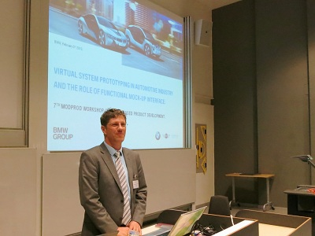
The 7th international MODPROD Workshop on Model-Based Product Development, organized by the MODPROD competence center at Linköping University, was successfully held at Linköping University, Linköping, Sweden, February 5-6, 2013. The workshop was attended by 104 people from industry and academia. Five tutorials were held in the morning the first day.
The first day keynote was by Stefan-Alexander Schneider, BMW, Germany: "Virtual System Prototyping in Automotive Industry and the role of FMI", followed by research and application presentations. In the evening a much appreciated workshop dinner was served at the Visualization Center in nearby Norrköping.
The second day started by keynote presentations by Moritz Diehl: "Modeling Tools for Optimal Control and Embedded Optimization", and by Jon Whittle: "Model-Driven Development: Does Anyone in Industry Really Use It?".
In total 31 research and industry presentations
were held on modeling and system development technology and applications,
both hardware and software modeling, and combined. The workshop ended
with an interesting panel discussion on the future of model-based development.
The program and the presentations are
available from www.modprod.liu.se .
This article is provided by Peter Fritzson (Linköping University)
OpenModelica'2013 Workshop
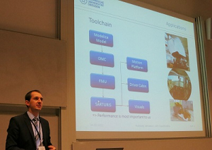
The 5th OpenModelica Annual Workshop organized by the Open Source Modelica Consortium was held successfully in Linköping, Sweden, on February 4, 2013. The workshop was attended by 62 people from industry and academia.
New results and applications regarding the OpenModelica platform were presented,
including multi-body simulation, wind and solar system modeling,
uncertainties in models, model-based optimization, debugging,
connection semantics, tearing, and initialization.
The program and the 13 presentations are available from
www.openmodelica.org .
This article is provided by Peter Fritzson (Linköping University)
Training Courses for Modelica and TIL
TLK-Thermo offers two day Modelica training courses for learning basic and advanced object oriented modeling. The Modelica course is an introduction to the most important features of Modelica, including numerical aspects. With many practical exercises the participants will learn how to design and implement Modelica libraries (not only within thermal science).
Furthermore, we are offering a one day course for thermal system modeling with the Modelica library TIL. The training course is directed towards simulation and modeling specialists with basic knowledge of the Modelica programming language. It can be seen as an advanced course to the basic Modelica training.
Upcoming courses:
- Modelica training: March 5th - 6th, 2013
- Introduction to TIL: March 7th, 2013
For further Information see www.tlk-thermo.com
This article is provided by Matthias Kwak (TLK-Thermo GmbH)
Upcoming Modelica and Dymola Training Events
Modelon has an extensive Training Portfolio for both beginners and advanced users. We offer regular certified Dymola training as well as training in Modelica and library/domain specific training. We have scheduled courses in Europe and USA, and give courses world-wide on demand. Next upcoming training events are:
- March 4-8, Göteborg, Sweden: Dymola Introduction Course
- April 8-12, Ann Arbor, MI: Dymola Introduction Course
- May 27-31, Lund, Sweden: Modelica Introduction Course, Dymola Introduction Course, Mechanics Modeling Course, Thermofluid Modeling Course, Air Conditioning Introduction Course, Vehicle Dynamics Introduction Course, Engine Dynamics Introduction Course, Hydraulics Introduction Course, Liquid Cooling Introduction Course
- June 3-7, Munich, Germany: Dymola Introduction Course
This article is provided by Johan Andreasson (Modelon AB)
Training classes in German at BAUSCH-GALL GmbH
We offer the following training classes in German language either in our office in Munich or at your site:
- 2-day training for Dymola and Modelica on 18-19 March 2013 and
- 2-day training "Modeling and Simulation with Dymola and Modelica" on 8-9 April 2013.
- New: A two-day training on AirConditioning Library is offered together with XRG Modellierung von Kältekreisläufen in our office on 20-21 March 2013
Information about training courses of BAUSCH-GALL GmbH.
This article is provided by Ingrid Bausch-Gall (BAUSCH-GALL GmbH)
Dymola and Modelica Training Courses from Claytex
Claytex are organising the following Dymola and Modelica training courses to be held at our offices in the UK. These courses are open to everyone but we also offer closed, bespoke training to individual customers.
- 10-11 April - Introduction to Dymola and Modelica
- 12 April - Advanced Modelica
- 11-12 June - Introduction to Dymola and Modelica
- 13 June - Advanced Modelica
- 13-14 August - Introduction to Dymola and Modelica
- 15 August - Advanced Modelica
For more details on these courses please see: http://www.claytex.com/engineering-services/training/. This is provisional calendar and subject to change, please contact chris.denly@claytex.com to confirm dates and availability.
This article is provided by Mike Dempsey (Claytex Services Limited)
Project News
MODRIO : Model Driven Physical Systems Operation
ITEA 2 project, 38 partners, > 171 person years, > 21 mill. euros budget, Sep. 2012 - Nov. 2015.
MODRIO is an ITEA 2 project whose objective is to extend state-of-the-art modelling and simulation environments based on open standards to increase energy and transportation systems safety, dependability and performance throughout their lifecycle.
The major outcome will be a holistic modelling and simulation framework for physical system design, diagnosis and operation assistance. This environment will be based on computing technology developed in Europe (Modelica and the FMI, Functional Mockup Interface).
The project is focused on solving the following main technical issues:
- Properties modelling, to automate and increase the coverage of system verification and validation.
- Automatic generation of dependability and safety analysis models from Modelica behavioural models, including possible hybrid stochastic aspects.
- Hybrid system state estimation, to initialize as accurately as possible simulators from the real state of the system for diagnosis and prognosis, including the handling of uncertainties.
- Systems with multiple operating modes, to simulate models beyond normal operating conditions, and make it possible to explore the full chain of consequences from an initiating event on the system, starting from the best estimate of its actual state, and going through all possible modes, including dysfunctional ones. This will be a major achievement in multi-mode systems behaviour prediction (for safety assessment, predictive control, etc.).
- Modelling and simulation infrastructure and services, for model verification and debugging, new compilation techniques for parallel execution and multi-mode simulation, cloud computing simulation services for system dynamics, remote monitoring of assets.
The new techniques will be used in the field of NMPC (non-linear model predictive control), and implemented in many commercial and open source platforms (SimulationX, OpenModelica, CATIA/Dymola, Test.Lab, Imagine.Lab AMESim, Wolfram SystemModeler, JModelica.org, SIMPACK, IDA simulation environment, Semantum cloud computing environment for system simulation).
Existing Modelica library will be upgraded and new libraries will be developed to use these new features in the industrial sectors of electrical power generation, transportation (high speed trains, aircraft and satellites), buildings, data centers, condition monitoring, project management and O&M.;
This article is provided by Daniel Bouskela (Edf)
Modelon now Member of FORELMO
With a budget of 1.9 million Euros the Bavarian Research Foundation will support the Research Cooperation for electric mobility, short FORELMO (German: Forschungsverbund für Elektromobilität). The starting signal fell on January 1st of the new year - the project duration was defined to last for three years.
The cooperation was founded with a focus on the topics electric motors, battery systems and power electronics, on which also Modelon specializes. The future technology electric mobility will be strengthened and advanced by this and is shown by the across locations collaboration of partners in Wurzburg, Nuremberg and Erlangen.
Modelon is working on a battery model, which is going to be validated and optimized with the cooperation partners. In line with the project, algorithms to define the state of charge (SOC) and the state of health (SOH) will be developed on the level of cell, module and package. For the quick and flexible development, a reference set of data will be generated (out of aging studies of EES) and the algorithms for a state estimation can be tested and optimized directly on the computer with Modelon′s battery model. The focus lies on the applicability of the state estimator on a modular battery management system (BMS) in order to raise the efficiency of the electric drive train.
Our partners in the network are in detail: Fraunhofer IISB, Erlangen, TU Munich, Georg-Simon-Ohm-University Nuremberg, Landshut university, EPCOS AG Munich, FMS Systemtechnik GmbH, IAV Munich, Infineon Technologies AG Neubiberg, LION Smart GmbH Frieding, Süd-Chemie AG Moosburg, TÜV SÜD Battery Testing GmbH Garching.
For further questions please get in touch! Simply write an email to our CEO johannes.gerl@modelon.com.
This article is provided by Anton Haumer (Modelon GmbH)
Library News
MoMoLib - Release of High Accuracy Humid Air and R134a Model
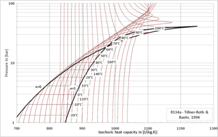
The release version of the fluid property library for humid air and the refrigerant R134a developed in the CleanSky MoMoLib project was succesfully verified and delivered by XRG Simulation to the CleanSky consortium on January 15th.
The humid air model is valid for a much broader range of states (611 Pa < p < 10 MPa, 143.15K < T < 2000K, incl. frost, dissociation), than the existing humid air model (Modelica.Media.Air.MoistAir) making it useful for aircraft applications or similar. The R134a refrigerant model can be used for modelling of any refrigeration system (aircraft, automobile, building systems, etc.).
The models can be used under Modelica 2 license and apply the corresponding media interfaces of Modelica.Media 3.2 (refer to library page).
A version of the MoMoLib library compatible with the Modelica Standard Library (MSL) 3.2.1 will be offered to the Modelica Association for integration into MSL.
This article is provided by Stefan Wischhusen (XRG Simulation GmbH)
TLK TILMedia - Thermo-physical substance properties (version 3.1)
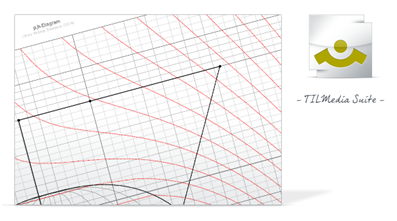
TILMedia is a library for fluid property calculation that can be accessed from Modelica, Excel, Matlab/Simulink, LabVIEW, etc. It provides highly precise fluid property calculation routines optimized for transient simulation in different environments.
- The table based calculation (spline and linear interpolation) of pure VLE fluid properties is now possible. The data can be drawn from highly precise equations of state e.g. from Refprop. Applied to water these algorithms are faster than IAPWS-IF97.
- A new approach has been implemented to stabilize and speed up the transient simulation with mixtures like {ammonia, water}. Absorption processes can now be simulated dynamically.
- TILMedia now has an Interface to the Modelica.Media, allowing the usage of Modelica.Fluid with TILMedia fluid properties.
For further Information see www.tlk-thermo.com
This article is provided by Matthias Kwak (TLK-Thermo GmbH)
Visualization Library 1.2
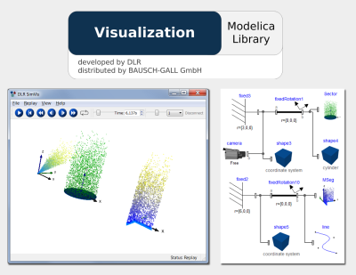
The Visualization Library is developed by DLR-RM and provides advanced model integrated visualization for Modelica models. Version 1.2 of this library has been released for the latest Dymola versions.
This update includes a new system for particle visualization, new features for camera views and improvements in the SimVis visualization tool (e.g. new option to use GPU for calculating flexible body interpolations).
Our range of Modelica Libraries is available at
http://bausch-gall.de/molib.
For more information, please contact
info@bausch-gall.de.
This article is provided by Ingrid Bausch-Gall (BAUSCH-GALL GmbH)
SimulationX Update - Industrial Utilities Package 1.1
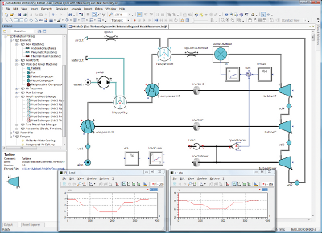
ITI has published a new Modelica based library package for simulating efficient and reliable industrial utilities. The package helps to calculate the use of energy resources and decentralized energy storage, which supports a significant optimization of local energy systems. The SimulationX toolbox enables a user to simulate energy-efficient power plants, supply networks and other systems such as heat pumps and compressed-air treatment within a single model.
Users are able to quickly see the impact of subsystem parameters on the global performance: energy efficiency, combustible consumption and pollutant emissions. They can also change the architecture and technologies quickly, e.g. exchange a 1-stage heat pump for a 2-stage one. In this way, engineers make a more informed choice of architecture with better specifications of the subsystems.
During the operational phase, the model previously built and validated by engineers can be used as a virtual simulator. Thus, technicians are able to practice failure events, i.e. compressor failure, engine knocking, choking of flow, external leakage of a heat pump or compressed air pollution. They can tune different subsystems as in reality in order to safely control the global performances of a plant.
Features
- Model any physical domain (mechanical, electrical, thermal, fluid) in only one simulation environment
- Use a toolbox with major components of various industries (e.g. boiler, gas turbine, heat pump, compressed-air treatment)
- Test different technologies for the same function with ease
- Vary parameters during the calculation and see the impact instantly
- Transfer completed models into C-code or HiL
- Simplify and accelerate the design of control systems
For more information visit www.itisim.com.
This article is provided by Manuela Joseph (ITI GmbH)
OpenHydraulics 1.0 Library
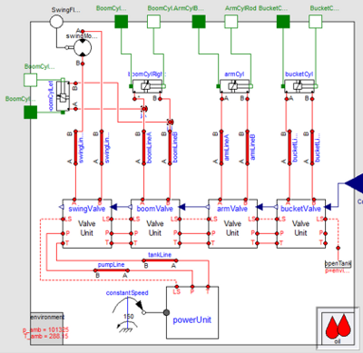
The OpenHydraulics library is developed by Georgia Tech and the Center for Complex and Efficient Fluid Power (www.ccefp.org). Although this is the first release of the library, it is already well-populated and will allow for the modeling of most hydraulic systems without any need for further model development.
The library contains 1D model elements for a large number of hydraulic components and circuits. It is built up in a modular fashion, starting from models for basic fluid phenomena grouped in the "Basic" package, which are then combined into models for hydraulic components (Cylinders, Lines, MotorsPumps, Sensors, Valves, Volumes). Finally, the components are incorporated into several example circuits, such as a pressure-compensated load sensing circuit. A comprehensive example is also included in which a hydraulic excavator performs a trench-digging cycle.
CCEFP faculty have plans to develop a basic fluid power simulation application that uses the library. The audience for the application will be engineering students studying basic fluid power or system dynamics with fluid power examples. In addition, anybody else with an interest in hydraulics is invited to contribute to the further development and refinement of the library by contributing to the GitHub project: https://github.com/cparedis/OpenHydraulics
This article is provided by Chris Paredis (Georgia Institute of Technology)
Vendor News
FMI Add-in for Excel 1.1
 The the new FMI Add-In for Excel version 1.1 supports parallel simulation of FMUs on multi-core computers and features new customizable sheet layouts based on named ranges.
The the new FMI Add-In for Excel version 1.1 supports parallel simulation of FMUs on multi-core computers and features new customizable sheet layouts based on named ranges.
The FMI Add-In for Excel allows for interaction and analysis of system models in Microsoft Excel, based on Functional Mockup Units (FMU).
The power of Microsoft Excel combined with the flexibility and portability of the open-standard model format from Functional Mockup Interface (FMI) allows for a highly efficient workflow for experiment setup and reporting for design explorations, batch simulations, and more.
The FMI Add-In for Excel is developed in close contact with Modelon customers and is based on our extensive understanding and experience of industry needs. The product is tailored to fit the needs in model based engineering processes in all industries.
Key features
- Import and simulation of Functional Mock-up Units (FMUs) in Microsoft Excel®
- Parameter sweeps and sensitivity analysis
- Batch simulation and design space exploration
- Support for FMI for Model Exchange 1.0 (initialization of models)
- Support for FMI for Co-Simulation 1.0 (initialization and dynamic simulation)
- Parallel simulation of FMUs on multi-core computers.
- Customizable sheet layouts for interacting with FMUs, designing experiments and analyzing results.
Visit the product webpage to download a free trial.
This article is provided by Johan Åkesson (Modelon)
FMI Toolbox for MATLAB 1.4.4
 Modelon FMI Toolbox for MATLAB® and Simulink version 1.4.4 includes several improvements and optimizations to streamline its use with large-scale and complex systems.
The FMI Toolbox for MATLAB links state of the art Modelica-compliant tools, including AMESim, Dymola, SimulationX, OpenModelica, and JModelica.org, to the MATLAB/Simulink environment.
Modelon FMI Toolbox for MATLAB® and Simulink version 1.4.4 includes several improvements and optimizations to streamline its use with large-scale and complex systems.
The FMI Toolbox for MATLAB links state of the art Modelica-compliant tools, including AMESim, Dymola, SimulationX, OpenModelica, and JModelica.org, to the MATLAB/Simulink environment.
Key features
- Import and simulation of Functional Mock-up Units (FMUs) in Simulink
- Easy to use graphical configuration interface for Simulink FMU block-set
- Import and simulation of FMUs in MATLAB® scripts
- Support for FMI for Model Exchange 1.0
- Support for FMI for Co-Simulation 1.0
- Manipulate FMUs and set model parameter values from MATLAB® scripts
Visit the product page to download a free trial.
This article is provided by Johan Åkesson (Modelon)
PyFMI 1.2 and Assimulo 2.3
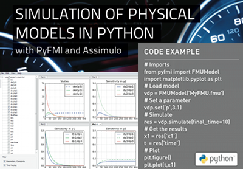
PyFMI and Assimulo are open source Python packages that make simulation of physical models in Python easy. The packages are based on the open Functional Mock-up Interface (FMI) standard and provide an ideal complement to physical modeling tools by unleashing the power of scripting and numerical processing in Python. The standards FMI for Model Exchange 1.0 and FMI for Co-simulation 1.0 is supported by PyFMI.
PyFMI and Assimulo are ideal components in Modelica-based tool chains where Python scripting is required. PyFMI provides both an interface to the native FMI functions, and convenient high-level functions for setting model parameters, simulating models and retrieving simulation results. PyFMI is based on FMI Library, which is the package also used in the official FMU compliance checker. Assimulo provides state of the art simulation capabilities in the Python environment. Several integrators proven in industrial applications, notably IDA and CVODE from the SUNDIALS suite and Hairer’s Radau algorithm, are included. Integration of the sensitivity equations is supported.
PyFMI and Assimulo have been verified to work with FMUs generated by AMESim, Dymola, JModelica.org, OpenModelica, and OPTIMICA Studio.
Recent additions to Assimulo and PyFMI include support for Hairer's Dopri5 and Rodas integrators, support simulation of Co-simulation FMUs and the license of the packages has been changed to LGPL for easy redistribution.
This article is provided by Johan Åkesson (Modelon)
JModelica.org 1.9

JModelica.org is an extensible Modelica-based open source platform for optimization, simulation and analysis of complex dynamic systems. The main objectives of the project are to create an industrially viable open source Modelica environment, while offering a flexible platform serving as a virtual lab for algorithm development and research. JModelica.org also provides a platform for technology transfer, where industrially relevant problems can inspire new research and where state of the art algorithms can be propagated from academia into industrial use.
Highlights of JModelica.org 1.9:- Improved Modelica compliance, including support for external objects
- Support for MSL CombiTables
- Significant improvements in execution speed and memory consumption for the compiler - models with more than 100.000 equation can be compiled
- Simulation of Co-simulation FMUs
- Improvements to the CasADi-based collocation algorithm, including variable scaling based on simulation trajectories and support for minimum-time problems.
This article is provided by Johan Åkesson (Modelon)
Latest version of MapleSim tightly integrates with Modelica

Maplesoft announced the latest version of MapleSim, its Modelica®-based physical modeling and simulation platform. With tighter Modelica integration, as well as more simulation, analysis, and connectivity capabilities, MapleSim 6 offers even more ways for engineers to meet and exceed their system-level requirements.
MapleSim is based on the open standard Modelica modeling language for describing physical models and components. In MapleSim 6, support for Modelica is enhanced in many ways making it even easier for engineers to take control of their modeling and analysis. MapleSim 6 includes a view that instantly shows the corresponding Modelica code for any subsystem or component. By looking at the code, engineers can tell precisely what their model is doing, and more easily correct or improve its behavior. Other Modelica features include the ability to open and immediately use Modelica files inside MapleSim; the ability to easily save any MapleSim model as a Modelica file; and, through the new MapleSim Connector for FMI, the ability to export MapleSim models in a standard format that was established with the help of the Modelica Association, which is easily understood by other FMI-compliant tools.
“The combination of Modelica, an open, object-oriented, system-level modeling language, with the symbolic computation power of MapleSim enables a level of understanding, power, and extensibility that is not possible with “black-box” tools,” says Dr. Laurent Bernardin, Executive Vice-President and Chief Scientist at Maplesoft.”With the new features in MapleSim 6, it’s even easier for our customers to gain deeper insight into their designs, rapidly completing their most innovative projects and then passing their results down the toolchain.”
Maplesoft expanded the entire MapleSim product suite by releasing several additional add-on products, many created in partnership with industry leaders. The MapleSim Connector for FMI lets users export models to other FMI-compliant tools; the MapleSim Connector for B&R; Automation Studio enables the transfer of physical models into the integrated development environment of B&R; Automation Studio; and the MapleSim Connector for VI-CarRealTime™ allows engineers to incorporate high-fidelity, multidomain models created in MapleSim into the real-time vehicle simulation environment of VI-CarRealTime.
MapleSim 6 also offers several new features that reduce development time by speeding up the testing and experimentation process. MapleSim 6 supports the ability to access external code directly from within their simulations. For example, customers can simplify their testing by calling external controller code directly from within MapleSim, instead of exporting the MapleSim model to another tool. MapleSim 6 also includes a new “snapshots” feature that speeds up experimentation by allowing customers to start experiments from any time-step and initial condition without having to rerun the model every time. This release also provides the ability to run batch simulations and optimizations in parallel, taking advantage of multiple CPUs to complete the computations significantly faster.
This article is provided by Tina George (Maplesoft)
Maplesoft Supports the North America Modelica Users' Group
Over the last few years, Modelica has spread extensively beyond Europe and is enjoying growing popularity in the United States and Canada. The North America Modelica Users’ Group has been established to address issues that are often prevalent – and sometimes unique – within North American industry and academia.
Maplesoft’s support for the Modelica standard has grown over the years, culminating in the release of MapleSim in 2008. MapleSim allows a wide range of engineers to access the power of Modelica for developing simulations of multi-domain systems (mechanical, electrical, hydraulic, etc). With the launch of MapleSim 6, many enhancements have been included to further support the use of Modelica and to serve the needs of academic and industrial users.
“We have watched Modelica grow from an academic initiative in the early days, to a major force in the engineering simulation world today,” said Jim Cooper, President and CEO of Maplesoft. “We are pleased to use our resources to support the growth of this standard in the US and Canada, and look forward to partnering with other Modelica enthusiasts in this initiative.”
Maplesoft has taken an active role in the organizing committee for the North America Modelica Users' Group which consists of long-term advocates, academic and industrial users, as well as representatives from several tool vendors.
If you are a Modelica user, or you are considering Modelica for your physical modeling projects, and work in North America, you can register at the North America Modelica Users' Group web site.
This article is provided by Tina George (Maplesoft)
OpenModelica 1.9.0 Beta4 Simulates 92% of MSL3.2.1
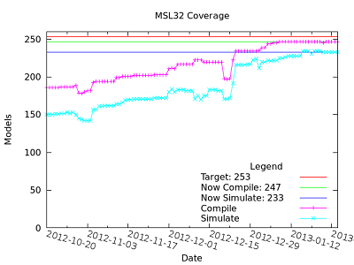
OPENMODELICA IS AN OPEN-SOURCE model-based cyber-physical mathematical modeling, architectural description and simulation environment intended for industrial and academic usage. Its long-term development is supported by a non-profit organization – the Open Source Modelica Consortium (OSMC), www.openmodelica.org. The OpenModelica 1.9.0 Beta4 release includes the following highlights:
- Much better simulation support for MSL 3.2.1, now 233 out of 253 example models simulate (92%) compared to 118 in the beta2 release Oct 20, and 30% in the 1.9.0 beta1 release.
- Good support for the MSL 3.2.1 MultiBody library. All example models except one simulate using dynamic state selection, the remaining one simulates with a special flag.
- Rather good support for the MSL 3.2.1 Fluid library, now 24 example models simulate (58%), and all flatten.
- Better simulation support for several other libraries, e.g. more than twenty examples simulate from ThermoSysPro, and all but one model from PlanarMechanics simulate.
- New default initialization method that symbolically solves the initialization problem much faster and more accurately. This is the first version that in general initialize hybrid models correctly.
- Prototype support for uncertainty computations, special feature enabled by special flag.
- Much faster matching and dynamic state selection algorithms for the compiler backend..
- Improved tearing algorithm for the compiler backend. Tearing is now used by default.
- New index reduction algorithm implementation.
- Functional Mockup Interface FMI 1.0 co-simulation, with OpenModelica as master, and improved FMI import.
- 3D graphics visualization with the Modelica3D library.
- Parallel algorithmc Modelica support (ParModelica) for efficient portable parallel algorithmic programming based on the OpenCL standard, for CPUs and GPUs.
The development work is organized by the Open Source Modelica Consortium.
For more information, see www.openmodelica.org.
This article is provided by Peter Fritzson (Linköping University)
AMESim Rev 12
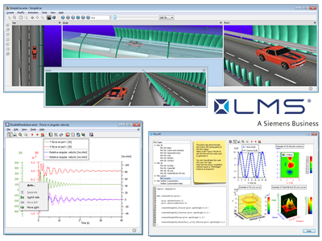
LMS International is proud to announce that Imagine.Lab AMESim, Rev 12, will be shipping early March. AMESim's Modelica Platform has taken a major step forward with this release, offering a full-featured user interface for editing Modelica text, diagrams, and icons. There are also a number of improvements within the Modelica compiler, including:
- expanded support of the Modelica Language Specification
- improved initialization algorithms
- enhanced support of discrete models
- enhanced state selection / state reduction algorithms for faster, more accurate simulations
Once Modelica models are assembled and compiled, they can be simulated stand-alone or coupled with causal models from AMESim. The user can then leverage AMESim's extensive libraries in combination with Modelica-based libraries and features in a single model and environment. The user can also take advantage of the latest AMESim features, such as:
- a new App Designer for easily creating customized Pre and Post-processing apps
- the animation viewer with new camera multi-view support
- new plotting features for customizing, formatting and exporting plots
Please visit the LMS website for more information. LMS is also pleased to now be part of the SIEMENS family, and the entire Imagine.Lab team is looking forward to this great opportunity to bringing even stronger value to the System Engineering community.
This article is provided by Michael Sasena (LMS International)
FMI Support in AUTOSAR Builder
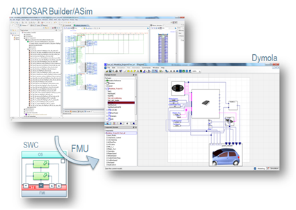
The simulation option ASim® (AUTOSAR Simulation) of Dassault Systèmes’ AUTOSAR Authoring Tool AUTOSAR Builder® has been enriched with an FMU export functionality. After simulation and test of AUTOSAR Software Components, Compositions in ASim can be exported as FMUs to be reused in other simulation environments such as Dymola®, which supports the FMI standard.
This functionality enables Software-In-the-Loop (SIL) simulation, where the application software is described as AUTOSAR software component(s) and the plant is modeled in Modelica.
Please visit the AUTOSAR Builder product page.
This article is provided by Dag Brück (Dassault Systèmes AB, Lund)
TLK FMI Suite
The FMI Suite of TLK-Thermo aims to provide tools around the FMI standard. It allows importing models according to the functional mockup interface 1.0 for both, co-simulation and model exchange in various simulators.
The model exchange interface provides an internal solver, so model exchange FMUs can be solved independent of the host applications solver. Simulation of multiple FMUs is also possible.
Currently import Interfaces for Matlab/Simulink, LabVIEW, DIAdem and the co-simulation platform TISC are available. An Excel import interface is in development.
Test versions are provided for free on demand.
For further Information see www.tlk-thermo.com
This article is provided by Matthias Kwak (TLK-Thermo GmbH)
OpenModelica Dynamic Optimization with CasADi Integration
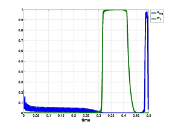
Model-based dynamic optimization can now be done with OpenModelica through integration with CasADi, an open source framework for numerical optimization. The coupling uses a standardized XML format for exchange of differential-algebraic equations (DAE) models. OpenModelica supports export of models written in Modelica and the Optimica language extension using this XML format, while CasADi supports import of models represented in this format. This allows users to define optimal control problems (OCP) using Modelica and Optimica specifications, and solve the underlying model formulation using a range of optimization methods, including direct collocation and direct multiple shooting. The proposed solution has been tested on several industrially relevant optimal control problems, including a diesel-electric power train, a free-floating robot, and a stirred-tank.
This article is provided by Peter Fritzson (Linköping University)
FMQ: Scalable, Cloud-Based FMI Batch Simulation
Today we are please to announce our cloud-based simulation service, FMQ.
Using FMQ, users can dispatch large numbers of simulations to the cloud. Because we use a scalable cloud computing platform behind the scenes, we can support running large numbers of concurrent simulations which means much faster turn around times for large batches than conventional desktop solutions.
The complexity of queuing and load-balancing simulation jobs is completely handled behind the scenes. This makes the entire process very simple for the user. To use FMQ, you must have a version of your model in FMU form. You can either use our RESTful web services API or our Python API, pyfmq, to submit jobs and collect your results.
FMU simulation is performed using PyFMI which provides access to several high quality integration routines and proven FMI compatibility.
FMQ is currently in a private beta. If you are interested in participating in the private beta, just drop us a note to sign up. During the beta period, use of the service will be free but scalability will be capped. If you need more capacity, we'll gladly work with you to try and find a solution.
More information about FMQ can be found on our products page and in our blog announcement.
This article is provided by Michael Tiller (Xogeny)
Xogeny Blog
The Xogeny corporate blog, "Will There be a Whiteboard?" was launched late last year and includes many topics relevant to Modelica users. In particular, the following recent posts use interesting examples to demonstrate the range of capabilities Modelica offers:
- Equations to Components - Showing how to transform systems of equations into a library of component models.
- Implicit Differentiation - Useful tips when building models that are kinematic in nature.
- Harmonic Motion - Using arrays in Modelica to recreate an interesting experiment in harmonic motion.
- Fun with Sensors - Using Modelica's discrete event capabilities to build models of realistic sensors.
- Kinematic Transmission Models - A discussion about functional vs. predictive models in the context of transmission modeling.
These blog posts are meant to provide interesting, thought provoking and educational material that introduces readers to the many interesting facets of modeling in general and Modelica in particular. For those looking for more detailed discussions and explanations, Xogeny offers on-site training that provides a complete introduction to Modelica.
This article is provided by Michael Tiller (Xogeny)